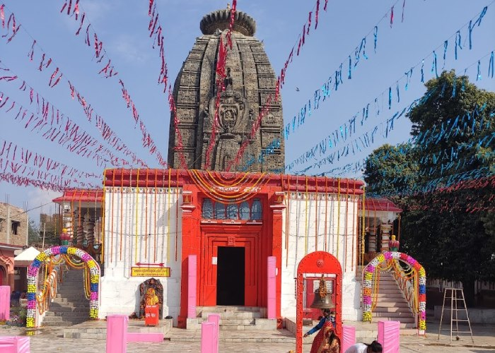
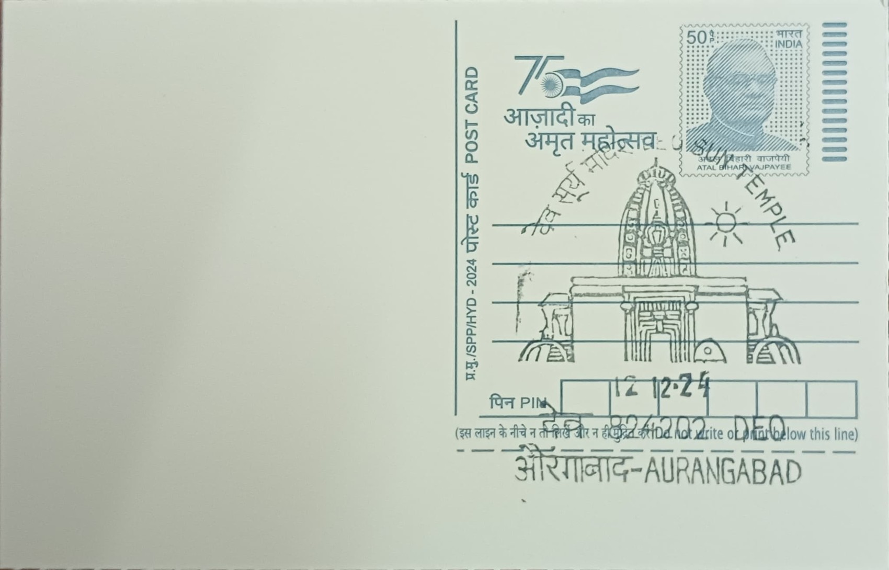

Local tradition holds that the Deo Sun Temple was raised in a single night by Lord Vishwakarma, the celestial architect of Hindu mythology, a founding legend that lends the shrine an air of divine rather than human origin. Scholarly and epigraphic evidence complicates this story considerably: the temple's written history can be traced to the Pala and Sena periods, and a later inscription dated 1437 CE records its dedication by Bhairavendra Singh, a Chandravanshi Rajput ruler of the nearby Umga principality, who is also named alongside twelve generations of his ancestors in the same text. The Archaeological Survey of India itself has offered differing assessments of the structure's age, with one estimate placing its core construction in the eighth century and another pushing it back to the fifth or sixth century, reflecting a monument whose building history likely spans several phases rather than a single moment.
As one of the most prominent solar shrines in India, the Deo Sun Temple occupies a distinct place among Hindu pilgrimage sites because its presiding deity is worshipped not as a single form but as Trikal Surya, representing Brahma in the rising sun, Shiva in the midday sun, and Vishnu in the setting sun. This theological framing underlies the temple's importance to Chhath Puja, the rigorous multi-day fast and sun-worship festival observed chiefly across Bihar and eastern Uttar Pradesh, for which Deo draws among the largest congregations of any single site in the country. The temple's prominence has also brought it formal recognition and protection as a site of archaeological and cultural importance, placing it within the same institutional framework as other centrally protected monuments in the state even as it continues to function as an active place of worship.
Architecturally, the temple is generally described as blending Nagara, Dravidian, and Vesara stylistic elements, an unusual synthesis for a single structure and one that has fed scholarly debate over its construction history. Its most frequently cited feature is a finely carved shikhara reported at roughly one hundred feet in height, capped by an amalaka and topped with a gold-coloured kalasha, or ritual urn, visible above the surrounding temple town. Unlike the overwhelming majority of Hindu temples, which orient their main sanctum toward the east to greet the rising sun, the Deo temple's entrance faces west, directly addressing the setting sun, a layout that mirrors Chhath Puja's own ritual structure of offering arghya, or water oblations, to the sun at both dusk and dawn.
The temple complex includes the Surya Kund, a sacred bathing tank where pilgrims immerse themselves before presenting offerings, and during the days of Chhath this tank and the open ghats built around it become the focal point for lakhs of devotees who travel to Deo from across Bihar and neighbouring states specifically for the festival. The scale of this seasonal gathering, concentrated into the few days of the Chhath observance each autumn, places Deo among a small handful of sites, alongside locations such as Patna's riverfront ghats, that anchor the public celebration of the festival at a regional level rather than merely a local one.
In late 2025 the Patna High Court directed the Bihar government to carry out a structural safety and conservation audit of both the Deo Sun Temple and the neighbouring Umga temple complex, after visible signs of erosion, structural stress, and strain from unmanaged visitor numbers were flagged to the court. The directive has placed the temple's upkeep more explicitly under the joint oversight of state heritage authorities and local temple management than before, a shift aimed at reconciling its status as a protected monument with the enormous foot traffic it receives every Chhath season. The temple today functions simultaneously as a living centre of Surya worship and as a structure now subject to formal conservation scrutiny, a dual status that is likely to shape how its upkeep is funded and managed in the years ahead.
| Date of Introduction | October 8, 2024 |
|---|---|
| Address | Sub Postmaster, |
| Deo SO, | |
| Aurangabad (dt.), Bihar - 824202. |